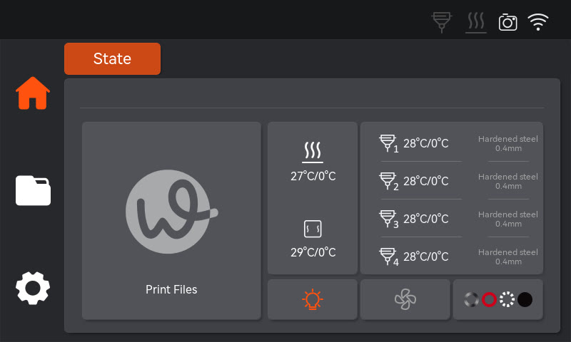
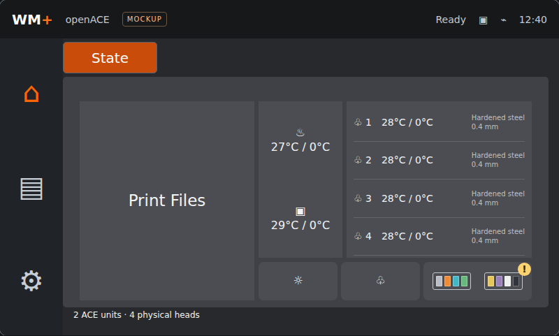
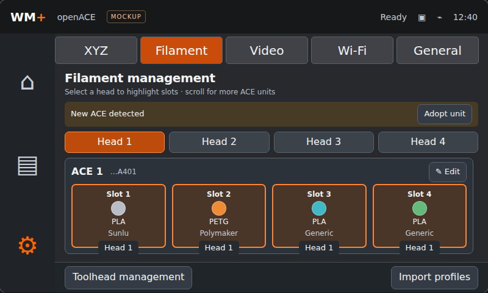
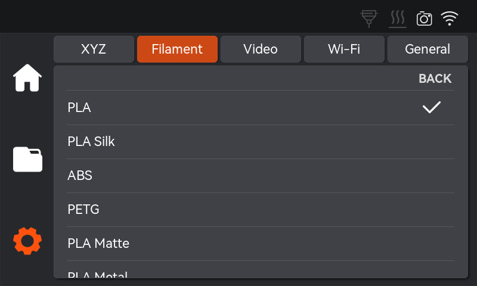
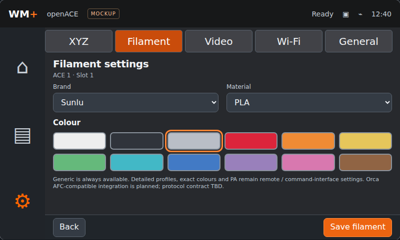
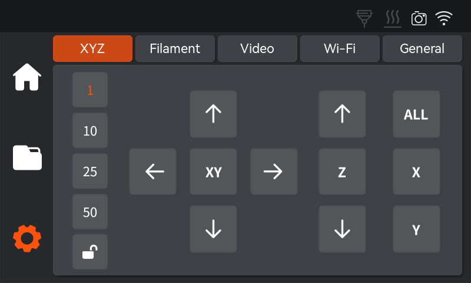
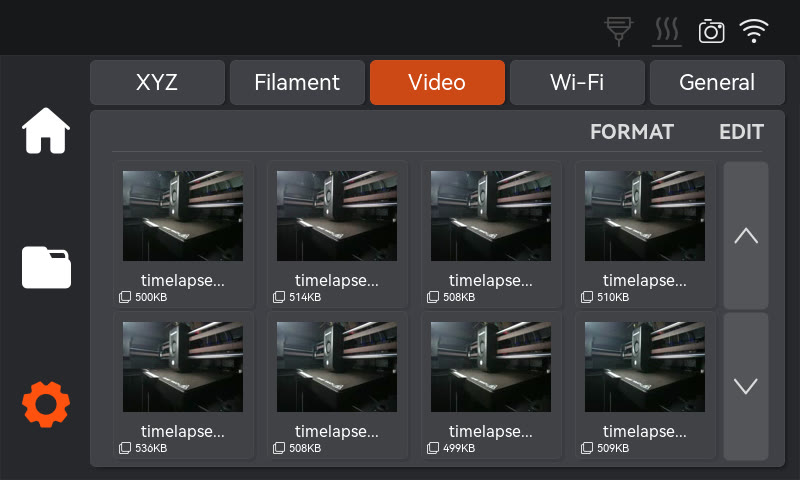
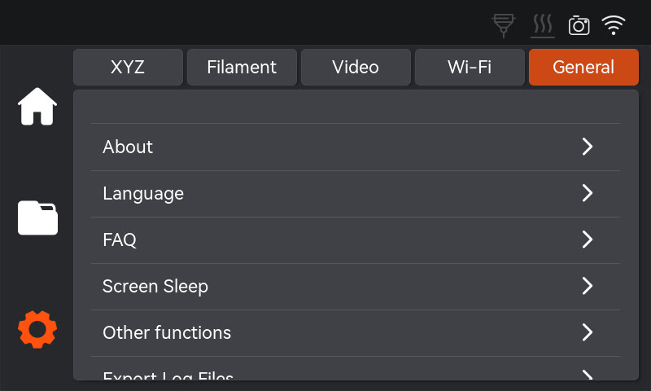

Current WM screens → proposed WM+ changes
Observed on the printer, 29 October 2026. WM+ remains installed; these are vendor screens as currently displayed, not proof of an unmodified stock installation. Proposed images use fictional data.
Confirmed route: Home → bottom-right filament mini-view → Settings / Filament → material list. The sidebar remains Home / Files / Settings.
Navigation-only walkthrough: dismissed Print Completed with OK, visited file list and settings, inspected the material list, and returned Home. No load, unload, extrusion, heating, homing, resume, reprint, calibration, format, edit or save actions were requested.
Gaps: active-print and paused states were not exercised; print-preview, colour picker, nozzle/temperature dialogs, nested General pages and current WM+ management panels remain to be verified. A colour-swatch tap did not establish an editor transition. Wi-Fi was observed but its screenshot is excluded because it contains local network details. Files screenshots likewise remain local.
Home / State
Home sidebar icon → State. Bottom-right four-colour mini-view → Settings / Filament.
Observed current screen

Proposed extension

Design implication: Keep the layout. Head-temperature panel opens toolhead management; filament mini-view opens manual / ACE slot management.
Settings / Filament
Home mini-view → Filament. Four physical head cards; TAKE / RELEASE / UNLOAD / LOAD.
Observed current screen

Proposed extension

Design implication: Retain the home mini-view entry. Move physical actions into toolhead management; show four manual columns or grouped ACE slots.
Material list
Filament card material → material list; BACK returns. Visible choices include PLA, PLA Silk, ABS, PETG and PLA Matte.
Observed current screen

Proposed extension

Design implication: Use a simple brand / material / palette editor; Generic always available. Advanced profile and PA fields are remote.
Settings / XYZ
Settings sidebar → XYZ. Step sizes 1 / 10 / 25 / 50, XY and Z jog arrows, ALL / X / Y home and lock icon.
Observed current screen

Disposition: retain
No replacement mock proposed for this screen.
Design implication: Keep the screen. Review command ownership and clearance separately; this walkthrough did not activate movement.
Settings / Video
Video tab → timelapse-file thumbnails with FORMAT / EDIT and page arrows.
Observed current screen

Disposition: retain
No replacement mock proposed for this screen.
Design implication: Keep the file gallery; do not describe this tab as a live-camera view.
Settings / General
General tab → About, Language, FAQ, Screen Sleep, Other functions; Export Log Files partly visible below.
Observed current screen

Disposition: retain
No replacement mock proposed for this screen.
Design implication: Keep general navigation. Nested pages still need review.